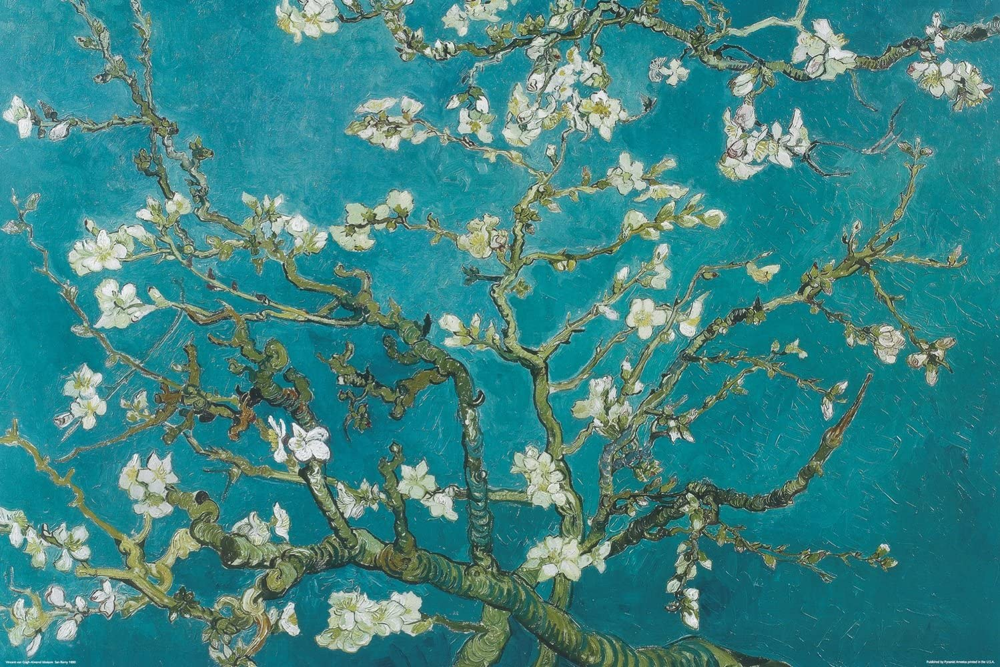
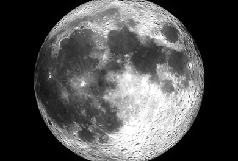

I love my cat. I miss my cat a lot. I miss my family. I like minimal archutectures. I like photography. I love moon ninght. I love yellow. I love poem. I love I like I miss.
The sky where the season passes
is brimming with fall
a worry
I think I will count all the stars of fall
The stars that engrave themselves in my heart — one, two
The reason I can’t count them all now
is that morning comes easily
is that tomorrow night remains
is that my youth is not over.
The memory in a single star and
The love in a single star and
The loneliness in a single star and
The longing in a single star and
The poem in a single star and
Mother, Mother in a single star,
Mother, for each star I try to say a lovely word. The names of the kids I shared a desk with in grade school, Pae, Kyung, Ok, such names of the native girls, the names of girls who’ve already become mothers of babies, the names of poor neighbors, pigeons, puppies, rabbits, mules, deer, Francis Jamme, Rainer Maria Rilke, I try to say the names of such poets.
They are too far away.
Just as the stars are a long way off.
Mother,
and you are far away in Bukgando.
I long for something
and so on top of this hill where the starlight falls
I try to write the letters of my name
and cover it up with dirt.
To be sure the bug that stays up all night crying
does so because the shameful name saddens it
However, when winter passes and spring also comes to my star
as the green grass grows above the grave
over the hill where my name is buried
grass will grow thick like pride itself.

